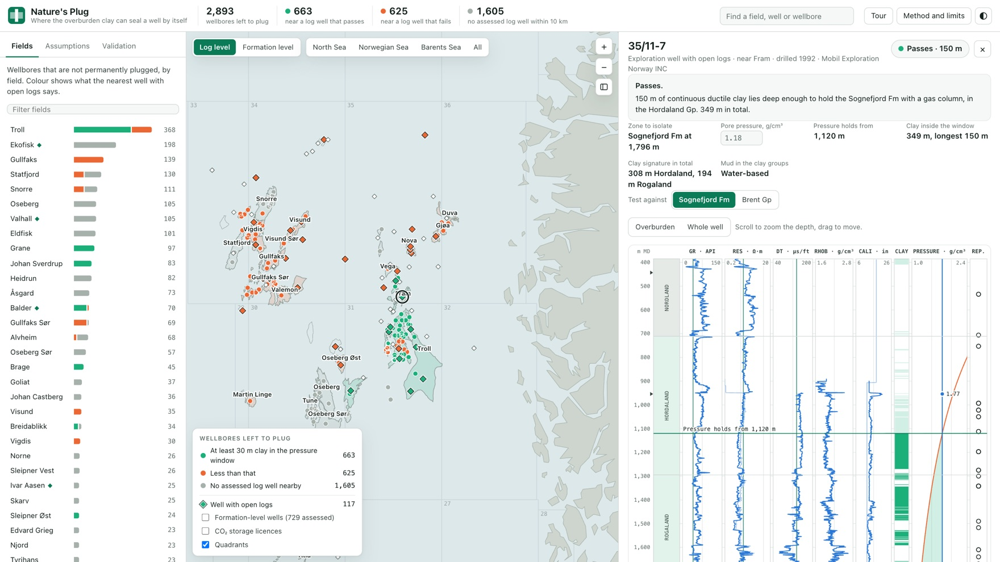

FORCE VibeCode Hackathon · Stavanger · November 2026
Nature’s
Plug
An open atlas of where the clay above the reservoir can seal a well by itself, and where it cannot.
Jesper Hammersvik · Fredric Hegland
Drag the scene to look around · → next · N notes · H all keysScroll down for the next slide
Plugging is over half the cost of shutdown
2,893
wellbores on the Norwegian shelf are not yet permanently plugged
NOK 50 M to 1 bn+
is what one plugging operation has cost
78%
of the cost is carried by the State
Sources: Norwegian Offshore Directorate, 13 November 2025 · FactPages, 17 November 2026. One slab in a column is one wellbore.
Some clay closes the annulus by itself
Soft clay above the reservoir creeps in around the casing and closes the gap without cement.
- In use
- A barrier element on the Norwegian shelf since 2006.
- Rule of thumb
- At least 30 m in one piece, and stronger than the reservoir pressure.
- Missing
- An open map of where it can work.
Sources: Williams et al., SPE/IADC 119321 (2009) · Havtil / Reflekt AS, knowledge report on creeping shale, November 2025. The drawing is not to scale: the gap is a few centimetres wide.
Nature’s Plug maps where the clay can seal
Open data only. A static web app with no server and no build step.
117
wells with open logs, from the FORCE 2020 data set
2,050
exploration wells with tops and leak-off tests
2.75 M
pages of well reports, searched

663 wellbores sit near a well that passes
Log level · 117 wells with logs, 52 assessed
Sixteen fields have at least one such wellbore, among them Troll, Grane, Johan Sverdrup, Balder and Brage.
Built here: the Green Clay,
in the operators’ own words
485 wellbores name it
On Troll, Oseberg, Brage and Visund the drillers call a swelling clay in the Hordaland Group the Green Clay.
29 sites give its depth
One fitted line finds its top on a field it has not seen within 55 m on average. A plain guess misses by 123 m.
Where it sealed
Veslefrikk: reported as a barrier element. Brage: confirmed on a log in 2009.
Where it did not
Visund: 792 m of it behind uncemented casing was assumed closed after two years. Total mud losses showed it was not.
From 2.75 million pages of public well reports. Fifteen documented cases in all: against them the atlas flags both failures and misses most of the successes. Every number links to a file and a page in the app.
It ranks where to look.
It does not verify a barrier.
No bond logs
Open data has none. A barrier is verified by logging the casing and pressure-testing the annulus.
Mud weight, not measured pressure
Mud weight overstates pore pressure. Measured values are in the well reports.
Uncalibrated thresholds
The clay signature is not yet checked against laboratory or field measurements.
Judged by a neighbour
A wellbore takes its result from an exploration well up to 10 km away, not from its own logs.
The data pipeline, the first version of the app and these slides were prepared on 17 and 18 November, before the hackathon began. The Green Clay predictor and the list of documented cases were built here. All of it with AI coding assistance (Claude Code). Open data only.
The well reports hold the next step
1 · Measured pressure
Read formation pressure tests out of the reports and replace the mud-weight estimate.
2 · Each wellbore on its own
Read cement tops and casing for the development wells, so no result is borrowed from a neighbour.
3 · A bond log dropped in
Let an operator compare a real log with the prediction for the same well.
4 · Carbon storage
Run the same screen on old wells inside CO₂ storage licences. They are the blue outlines on the map.
Code and data
github.com/[account]/natures-plug
Open data · MIT licence · Jesper Hammersvik and Fredric Hegland
Backup · the method
The screen is four tests on open data
Every threshold is a slider in the app, and the map is recalculated at once. Pressure test after Williams et al., SPE/IADC 119321 (2009).
Backup · two wells, one depth scale
Fram passes and Visund fails
150 m of clay lies below 1,120 m, where the rock holds the pressure.
654 m of clay lies above 2,375 m, where the rock starts to hold.
Depths in metres along the hole, from the rig floor. Pressure as equivalent mud weight in g/cm³. Drag it to try another value, as in the app.
Backup · the check
The screen finds fields that already use it
Wellbores left to plug that have the clay group where the pressure holds, at formation level. Havtil’s 2025 report names these five fields as using creeping clay as a barrier. The screen was not told which they are.
20 of 21 wells that pass on logs are also flagged by formation tops alone. So are 8 of the 31 that fail, which is why the logs are needed.
About 2× as many clay-specific words per kilometre drilled in the clay groups as in the groups below, in 2.75 million report pages.
Source: Havtil / Reflekt AS, 25 November 2025